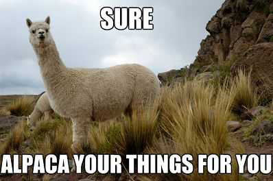

Ruby Classes
2/2/2016
Classes. They make everything organized, categorized, simplified. Classes allow you to create repeating objects that have the same instance variables and call the same methods. They create order to what would otherwise be absolute chaos!
What is a class? A class is an instance of an object. It’s like an object’s blue print. Think of some object classes you may already know - String, Integer, Float. What happens when you identify an object as a String? It suddenly has access to this huge world of methods. You can call a string’s length. You can capitalize it, lowercase it, and reverse it. You can even treat a string like an array! The String methods #length, #capitalize, #reverse, have all been declared within the String’s class. This gives any item declared as a String the power to use these methods.
So here is where things get really cool - you can create your own classes with their own variables and methods. Theoretically, you could even create your own String class. Would you ever want to do that? Probably not, Ruby gives you the String class built in to their code. Ruby actually gives us a ton of pre existing classes. However, there will be many times when you need to create your own class.
In order to better examine how to create a class, and why classes are useful, let’s look at an example. Say you, your husband, and your little dog are going on a trip. You each have your own bags and a long list of items you need to bring. You could, of course, just create a list of the items each person wants to bring. You could even create a Ruby program that simply three arrays containing these lists of items. Maybe it would look something like this.

Tori = [“Jeans”,”Shirts”,”Running Shoes”,”Boots”,”Yoga Pants”,”,”Dresses”,”Hair Brush”,”Toothbrush”,”Deoderant”,”Shampoo”,”Conditioner”,”Hair Ties”,”Make Up”,”Jewelry”,”Chocolate”,”Present for Mom”,”Book for Sister”]
Matt = [“Jeans”,”Shirts”,”Running Shoes”,”Dress Shoes”,”Watch”,”Under Shirts”,”Shaving Cream”,”Body Wash”,”Deoderant”,”Toothbrush”,”Toothpaste”,”Chips”,”Granola Bar”,”Gatorade”,”Pajamas”]
Nors = [“Dog Food”,”Water Bowl”,”Food Bowl”,”Stuffed Squirrel”,”Extension Leash”,”Short Leash”,”Harness”,”Plaid Jacket”,”Blue Sweater”,”Squeaky Duck”,”Treats”]
This is a terrible way of completing this task. The name of the array indicates the owner of the list, but the name of a variable is a difficult thing to reference. What if you want to find or remove an item? What if you want to add an item? What if you want to print off a list of items by category? None of these things can be done, as there are no methods attached to these arrays. You could, of course, create individual methods and attach them to each collection, but that seems repetitive and therefore silly. There has to be an easier way. This is where classes come in.
The best way to learn is by jumping right in to an example! Check out the code below. This is a class called Bag, which allows a user to create a "bag" that has an owner, description, and a list of organized items. This Bag class allows the user to add items, remove items, check_bag to make sure everything is in there, and even unpack when you arrive at your final destination! At any time, you can view a list of everything you are bringing in your bag with list_items, and check the owner or description of the bag.
Please note that the code below was colored and prettified using a code HTML/CSS generator called hilite.me!
class Bag
attr_reader :owner, :description
attr_accessor :items
def initialize(owner, description, items={})
@owner = owner
@description = description
@items = items
end
# Add items by type and quantity to the item list
def add(type, thing, quantity=0)
# Add a new type if it does not already exist.
@items[type] = [] if !@items.has_key?(type)
list_by_type = @items[type]
if list_by_type.is_a? Array then
list_by_type.push(thing)
elsif list_by_type.has_key?(thing) then
list_by_type[thing] += quantity
else
list_by_type[thing] = quantity
end
end
# Remove items by type and quantity
def remove(type, thing, quantity=0)
missing_type_error = "We could not find #{type} as a type! Please try again."
missing_item_error = "#{thing} does not exist in your list under #{type}."
wrong_quantity_error = "You tried to delete more #{thing} than you have. #{thing} has been removed from the list."
# Checks if type exists in list
puts missing_type_error if !@items.has_key?(type)
return false if !@items.has_key?(type)
list = @items[type]
# Removes the item by quantity depending on Array or Hash type
if list.is_a? Array then
if list.include?(thing) then
list.delete(thing)
return true
else
puts missing_item_error
return false
end
elsif list.has_key?(thing) then
if list[thing] < quantity then
list.delete(thing)
puts wrong_quantity_error
return false
else
list[thing] -= quantity
return true
end
else
puts missing_item_error
return false
end
end
# List all items in your bag
def list_items
@items.each do |type,list|
puts "#{type}"
puts "--------------------"
list.each {|item, key| puts "#{item} #{key}"}
puts ""
end
end
# Check for lost items in your bag
def check_bag(lost_item)
@items.each do |type,list|
contains_lost_item = list.any? {|item,empty| item == lost_item}
return true if contains_lost_item
end
return false
end
# Unpack the bag and print all contents
def unpack
@items.each do |type,list|
puts "#{type}"
puts "--------------------"
list.each {|item| puts item}
@items.delete(type)
puts ""
end
end
end
So, let's break this down! First, we can see we have a class called Bag. The very first thing any Bag class is going to do, is to call it's initialize method. initialize is the first thing any class searches for when a new object of that class is created. initialize is frequently used to set instance variables. In this case, we take our instance variables owner, description, and items, and set them equal to the arguments declared when the new Bag class was created. For more on instance variables or declaring initialize, check out the resources section below.
Before initialize, you can see attr_reader and attr_accessor, both linked to our instance variables. attr_reader and attr_accessor give access to these instance variables outside the class. Their sole purpose is to allow a user to either read or write to these variables. For more information on accessors, please check out the resources below.
The cool part of this code are the added functions. You can create a new bag, initialize it with all kinds of variables, and then change or read the instance variables. Let's get a bag packed for my little dog Nors.
nors_bag = Bag.new("Nors","Doggy Bag",{
"Clothes"=>["Plaid Jacket","Blue Sweater"],
"Snacks"=>{"Dog Food"=>5,"Bowl"=>1,"Food Bowl"=>1,"Treats"=>10},
"Toys"=>["Stuffed Squirrel","Squeaky Duck"],
"Misc"=>["Extension Leash","Short Leash","Harness","Brush"]
})
nors_bag.list_items
OUTPUT:
Clothes
--------------------
Plaid Jacket
Blue Sweater
Snacks
--------------------
Dog Food 5
Bowl 1
Food Bowl 1
Treats 10
Toys
--------------------
Stuffed Squirrel
Squeaky Duck
Misc
--------------------
Extension Leash
Short Leash
Harness
Brush
For such a little dog, Nors is not a light packer.

Now we have her bag packed, but I can't remember if I packed her Squeaky Duck.
puts nors_bag.check_bag("Squeaky Duck")
Output:
No worries, you already packed Squeaky Duck.
Nori took one look at her bag and decided she needed more treats and less brushes. Let's say we decide to add and remove some things from the bag.
nors_bag.add("Snacks","Bones",3)
nors_bag.remove("Misc","Brush")
nors_bag.list_items
Output:
Clothes
--------------------
Plaid Jacket
Blue Sweater
Snacks
--------------------
Dog Food 5
Bowl 1
Food Bowl 1
Treats 10
Bones 3
Toys
--------------------
Stuffed Squirrel
Squeaky Duck
Misc
--------------------
Extension Leash
Short Leash
Harness
It looks like Nors is all packed, and now we can do the same for myself and my husband! We can create our own bag class, pack it full of items, and then change the items around as we remember things we forgot to pack!
I hope this was a helpful overview of classes and how they work. If you are still unsure about this subject, take a look at some of the resources I have listed below. They really helped me in my understanding of the material! Please feel free to check out my bag class code on my GitHub site. Fork the project, copy it, or just look it over. I always love feedback, and would greatly appreciate any ideas you have for how to improve my code! I am sure there are many ways to make it better! If you see anything that could be improved, please send me an email at the contact information listed at the bottom of my site.